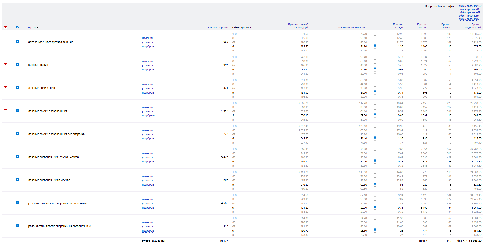

Аудит сайта. Переработка. Маркетинг. Яндекс.Директ.
Март 2026
За последний год количество первичных пациентов сократилось почти вдвое. При этом:
Результат: клиника теряет пациентов, которые уходят к конкурентам, потому что находят их первыми.
Поверхностный анализ сайта — моменты, которые влияют на конверсию и позиции в поиске
Это поверхностный взгляд. Полный аудит с детальными рекомендациями будет проведён после начала работы.
На сайте установлена Яндекс.Метрика (счётчик №22605190) — аналитика уже собирается.
Все направления запускаются параллельно с первого месяца. Подробности по каждому пункту — далее в презентации.
Полный аудит, исправление критичных проблем, улучшение конверсии. Сайт должен продавать, а не просто информировать.
Анализ рынка и конкурентов, разработка акций и программ лояльности, контроль обращений.
Сбор ключевых слов, подготовка и запуск первых рекламных кампаний. Бюджет тратим аккуратно — сначала тестируем, потом масштабируем.
Начинаем отслеживать результаты с первого месяца. Корректируем стратегию, усиливаем то, что работает.
Далее — оптимизация и масштабирование: увеличиваем вложения только в те направления, которые приносят результат.
Сайт — ваш главный инструмент продаж. Прежде чем вкладывать деньги в рекламу, он должен превращать посетителей в пациентов.
Это задачи, которые видны уже сейчас. После полного аудита список задач расширится — станет понятно, что ещё нужно доработать для максимальной конверсии.
Мы работаем с кодом сайта напрямую — не ждём очереди у сторонних подрядчиков. Правки вносятся быстро, без посредников.
Бонус: Создание раздела «Блог» на сайте + 2 первые экспертные статьи — в подарок. Далее ведение блога обсуждается отдельно.
Основная аудитория клиники — люди среднего и старшего возраста. Они не будут разбираться в сложной навигации и искать кнопку «Записаться» по всей странице.
Для них особенно важно:
Тестирование на реальных пользователях: будем показывать сайт людям в возрасте и спрашивать — что удобно, что нет, где запутались. Их обратная связь покажет, что нужно исправить. Это самый надёжный способ сделать сайт по-настоящему удобным.
Подготовка и запуск — с первого месяца. Бюджет тратим аккуратно: сначала тестируем, потом масштабируем.

Пример прогноза по 10 ключевым запросам из вашей ниши — для понимания уровня ставок и конкуренции
Это лишь часть запросов. При полноценной работе мы проработаем значительно больше ключевых слов и направлений.
Рекламный бюджет Яндекс.Директ оплачивается клиентом отдельно. Точная сумма определяется после аудита и зависит от количества направлений и желаемого объёма трафика.
Параллельно с работой над сайтом и рекламой ведётся маркетинговая работа
Анализ рынка и конкурентов в сфере реабилитации и восстановления опорно-двигательного аппарата. Анализ ценообразования клиник-конкурентов и ваших клиник — поиск точек роста.
Разработка материалов, которые мотивируют потенциального пациента оставить контакты или записаться на приём.
Разработка и внедрение акций и программ лояльности для привлечения и удержания пациентов.
Контроль звонков и обращений — отслеживание конверсии в записи на приём. Взаимодействие с колл-центром — контроль качества обработки входящих обращений.
Ежемесячная отчётность с аналитикой и рекомендациями по каждому направлению.
Мы постараемся создать на сайте раздел «Блог» и написать первые 2 статьи уже в первый месяц — техническая разработка раздела и эти статьи идут в подарок. Если основные задачи (переработка сайта, настройка Метрики, маркетинг) займут больше времени, блог может сдвинуться на второй месяц — мы не будем делать его в ущерб первоочередным задачам.
Как это работает: Человек вводит в Яндексе «боль в колене при ходьбе причины» → находит вашу статью → читает → видит, что клиника Бубновского лечит именно это → записывается на приём. Каждая статья работает месяцами и годами без дополнительных вложений.
Дальнейшее ведение блога обсуждается отдельно.
Мы не даём гарантий конкретных цифр по трафику, позициям или количеству заявок — и рекомендуем с осторожностью относиться к тем, кто такие гарантии даёт.
Продвижение в интернете зависит от множества факторов за пределами контроля любого подрядчика: алгоритмы поисковых систем меняются, конкуренты не стоят на месте, спрос подвержен сезонности, законодательство обновляется.
Предсказать точный результат невозможно — так же, как невозможно гарантировать, что конкретная рекламная кампания или статья «выстрелит» именно так, как запланировано.
Вы видите, что именно сделано и какие метрики меняются
Если что-то не работает — мы скажем и скорректируем стратегию
Выстроенная стратегия с регулярным анализом, а не хаотичные действия
Мы разбираемся в том, что продвигаем
Те, кто обещает «100% результат» и «гарантированный поток клиентов», как правило, либо не понимают, как устроен маркетинг, либо сознательно вводят в заблуждение. Наш подход — делать максимум возможного, измерять результат и постоянно улучшать.
| Что входит | |
|---|---|
| Аудит и переработка сайта (код, контент, SEO, UX, дизайн) | Включено |
| Яндекс.Директ (настройка, управление, оптимизация, отчётность) | Включено |
| Маркетинг (анализ рынка, конкуренты, акции, лояльность, контроль обращений) | Включено |
| Аналитика по всем каналам, ежемесячная отчётность | Включено |
| Проверка удобства сайта на людях старшего возраста (основная аудитория) | Включено |
| Создание раздела «Блог» + 2 первые статьи | Бонус |
| Итого | 440 000 руб./мес |
Вы занимаетесь медициной — мы занимаемся тем, чтобы о вас узнали.
Всю работу берём на себя под ключ. Вам не нужно разбираться в рекламе, аналитике и продвижении — вы просто отслеживаете результаты и изменения, а мы делаем всё остальное.
Согласование условий сотрудничества
Заключение договора
Панель сайта, Метрика, Вебмастер, данные по рекламе
Первые результаты в течение первой недели
Анализ рынка, конкурентов, подготовка Директа
Мы готовы начать сразу после заключения договора.